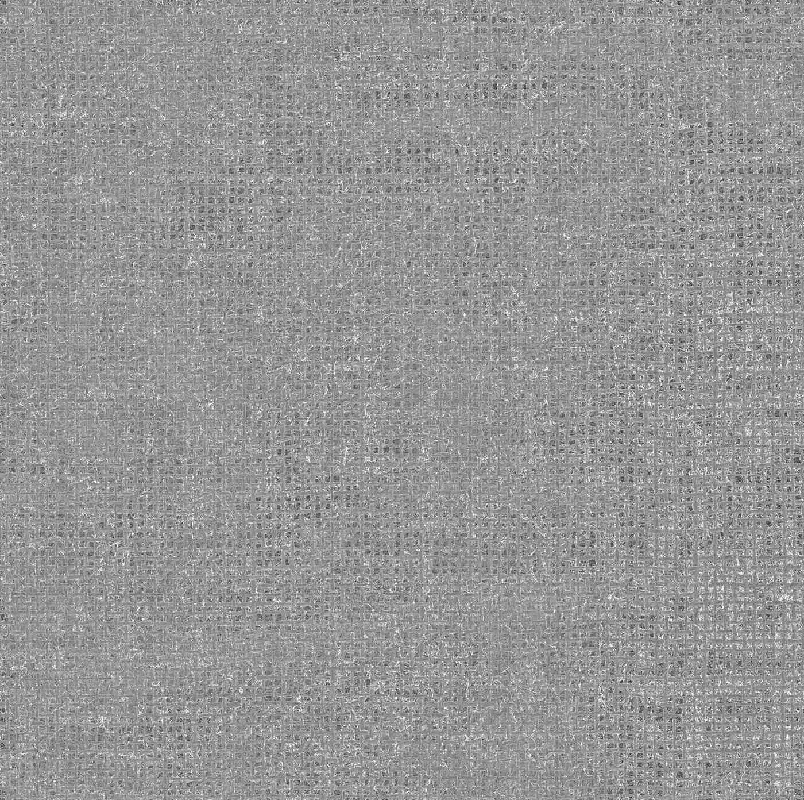
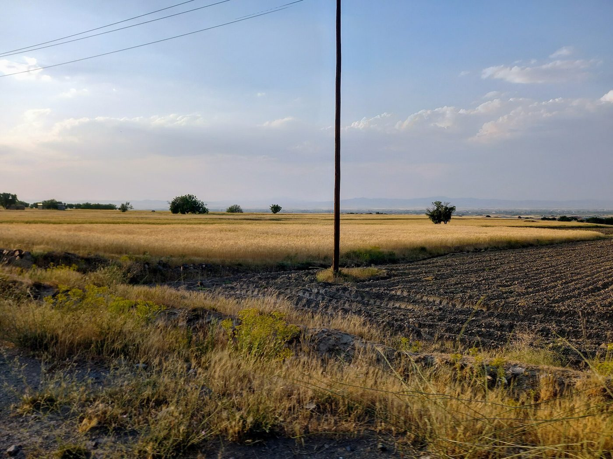

② 柄 ─ 全体を支える軸
このサイトについて
このページは、Boulangerie CoCotanの試作ホームページ(サンプル)です。ご契約後に、実際の写真と情報へ差し替えます。
写真帯 ─ イメージ



構成の考え方
「家庭の道具の部位の配置図」という型で、ほうきを六つの部位に分けました。吊り環・柄・巻き糸・穂・縫い目・穂先が、それぞれページや区切りに対応します。
ほうきは制作側の連想で、お店の理念・由来とは無関係です。
- ①吊り環掛けるための輪。入口の目印
- ②柄全体を支える一本の軸
- ③巻き糸穂を束ねて締める帯
- ④穂ふさふさと広がる本体
- ⑤縫い目穂を平らに整える糸
- ⑥穂先床に触れる先端
写真帯 ─ イメージ

